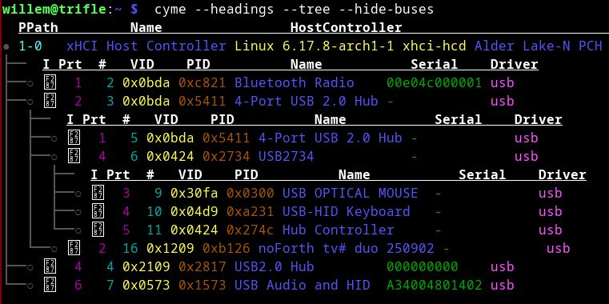
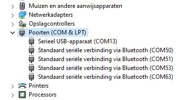

november 2025

RP2040 communication via USB
if it does not work:
What is the problem?
There are a number of possibilities:- Every version of your operating system has one or more USB CDC-class serial device drivers and will use their own conventions for USB serial devices.
- In addition each of the terminal programs that you van use will have its own quirks and may need changes to the set-up.
- Finally the USB of your PC may be overloaded by too many attached USB devices. Each device will require power and USB bandwidth, there is nothing left for an additional device.
The experienced serial interface user will be familiar with these kinds of problems and knows how to overcome them. In case you are not quite that experienced some options to explore:
- The correct, but also a bit lame advice is to study the documentation of your operating system and the CDC device driver of your PC and the terminal program that you use.
- Perhaps a bit better is the option to find on the web how others in similar circumstances have dealt with the specific combination of operating system and terminal program.
Which device should I use in my terminal?
For Linux and macOS:
The device can be found in /dev/tty* and is automatically created by the device driver. Procedure: plug in the USB cable from the RP2040, give the system a few seconds to respond, and check with:
ls -ltr /dev/tty*
ls shows files and directories,
-ltr means l: long, detailed information
t: sort on time
r: most recent time at the end
/dev/tty* all devices that start with tty
Example Linux:
ls -ltr /dev/tty* (many lines omitted) crw--w---- 1 root tty 4, 7 2025-06-07 03:59 /dev/tty7 crw--w---- 1 root tty 4, 8 2025-06-07 03:59 /dev/tty8 crw--w---- 1 root tty 4, 9 2025-06-07 03:59 /dev/tty9 crw-rw---- 1 root uucp 166, 0 2025-06-13 15:22 /dev/ttyACM0Tip: if the date/time matches the time when you plugged in the USB cable, then you have the correct device.
Example macOS:
ls -ltr /dev/tty* (many lines omitted) crw-rw-rw- 1 root wheel 19, 13 Jun 13 15:24 /dev/tty.usbmodem145Tip: if the date/time matches the time when you plugged in the USB cable, then you have the correct device.
For MS-Windows:
The device is a virtual COM port and can be found as a USB serial device or a Communication Device Class (CDC) device with the name COM and a serial number in Device Manager, Ports (COM & LPT).
How do I access the device?
For linux:
In the line at /dev/ttyACM0 in the example above, it says
(uucp depends on the Linux version and the device driver; other designations are also used, for example dialout).
crw-rw---- 1 root uucp
(uucp depends on the Linux version and the device driver; other designations are also used, for example dialout).

This means that root is the owner of the device with rw (read/write) access, and that users with the group uucp in their account also have rw (read/write) access to the device.
So your login account must be part of that group.
You can use the ‘groups’ command to see which groups you have. If uucp is not listed, you must add it: usermod -a -G uucp accountnaam
See man groups for options. Be careful, if you forget -a all existing groups will be deleted and you will no longer have access to your data.
For MS-Windows:

Select the desired COM port in the Tera Term Serial port setup dialog. Because there is no serial connection between the driver and the terminal application with USB CDC, details such as baud rate are not relevant. If necessary, use the Windows Device Manager overview to find the correct COM port. The line delay of 1 millisecond is important for successful file transfers.
Please note!
If there are time-consuming commands in the file that keep the RP2040 busy for more than approx. 600 ms, it is better to split the file to prevent errors during transfer; the other flow control mechanisms have no effect.
What baud rate should I set on my terminal program?
The baud rate setting is not relevant because communication on the PC to the terminal program does not run via a serial connection. Baud rate and similar settings with CDC are intended for communication with USB modems, for example, but that does not apply here; this functionality is not used here. The baud rate of the USB connection is high, but must be shared with other USB users.
How can I tell that there is no more space on the USB bus?
The simple approach: remove as many USB connections as possible (except your keyboard) from your PC and try again.
Alternative: (Linux/macOS) check the system logs for error messages or (Windows) check Device Manager for USB devices with errors.
*